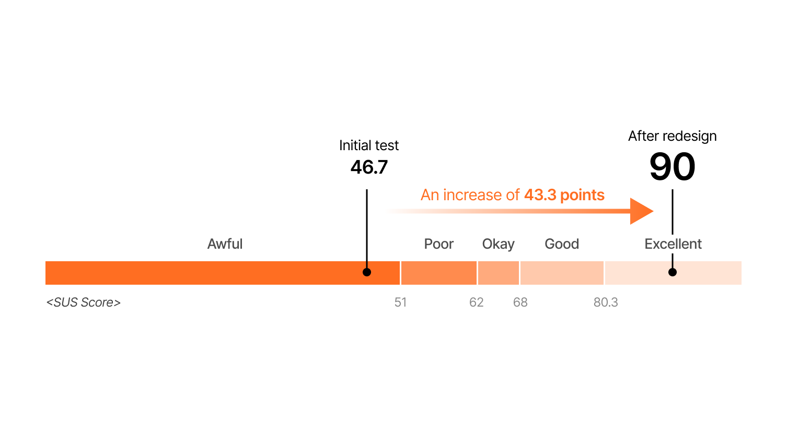

PROJECT OVERVIEW
PROBLEM
AI-powered nail sizing is unfamiliar to users, requiring clear guidance.
However, the existing text-based tutorial failed to engage users, leading to low learning effectiveness and high measurement failure rates.
However, the existing text-based tutorial failed to engage users, leading to low learning effectiveness and high measurement failure rates.
SOLUTION
"Introducing a tutorial page with motion graphics to provide intuitive guidance."
INSIGHT FROM UT
Weak information delivery due to text-heavy tutorials
User confused the tutorial page with the measurement page.
User measured the thumb without placing it on the table.
"Text-based tutorials fail to capture attention
and do not effectively convey the correct way to measure nails."
and do not effectively convey the correct way to measure nails."
FIRST ITERATION
Tutorial with illustration for better visual clarity.
USABILITY TEST
Conducted UT with 11 participants to assess the effectiveness of the tutorial page.

System Usability Scale (SUS) score: Increased from 46.7 to 90.
However, the average time spent on the tutorial page is less than 3 seconds.
"Static illustration failed to capture user attention"